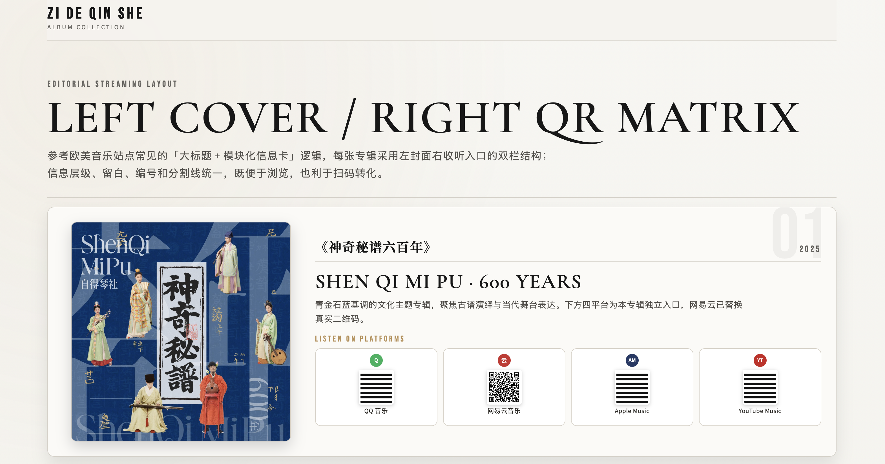

神奇秘谱600年
2025 年恰逢《神奇秘谱》刊行600周年，自得琴社以此为缘起推出专辑与音乐会。该书由明代宁王朱权于 1425 年编纂，是中国现存最早、保存最完整的古琴谱集，收录 64 首琴曲。此次演出精选十三首，以古琴独奏、古曲新衍与琴曲移植三种形式，将六百年琴韵化为今时可闻之声，邀知音共赏弦上古今。
自得琴社音乐数字专辑
穿越千年时光，感受中国传统音乐的独特韵味与东方美学，
让世界听见中国传统音乐的声音。

2025 年恰逢《神奇秘谱》刊行600周年，自得琴社以此为缘起推出专辑与音乐会。该书由明代宁王朱权于 1425 年编纂，是中国现存最早、保存最完整的古琴谱集，收录 64 首琴曲。此次演出精选十三首，以古琴独奏、古曲新衍与琴曲移植三种形式，将六百年琴韵化为今时可闻之声，邀知音共赏弦上古今。
自得琴社《琴为何物》朝代系列音乐会的原声带，“水云归” 取自宋代琴家郭沔《潇湘水云》，承载着中国艺术虚灵高远的精神与人曲相传的文脉。专辑曲目涵盖古曲改衍与新作，既收录《杏花天影》《泛沧浪》等文人雅士的情思与襟怀，也包含《醉醉渔，唱唱晚》《满江红》等市井百姓的歌咏与期盼，尽显宋代的人文风貌与时代气韵。
自得琴社《琴为何物》朝代系列音乐会的原声带，专辑名取自王维 “大漠孤烟直，长河落日圆” 的诗句，以雄浑高阔的意境展现大唐气象。专辑收录古曲改衍与新作，涵盖《幻世长安》《玉狸记》的异志奇趣、《折柳阳关》《凉疆》的百姓离愁、《破阵》的戍边豪情与《霓袋惊梦》的唐宫残梦，全方位呈现大唐的多元风貌与时代精神。